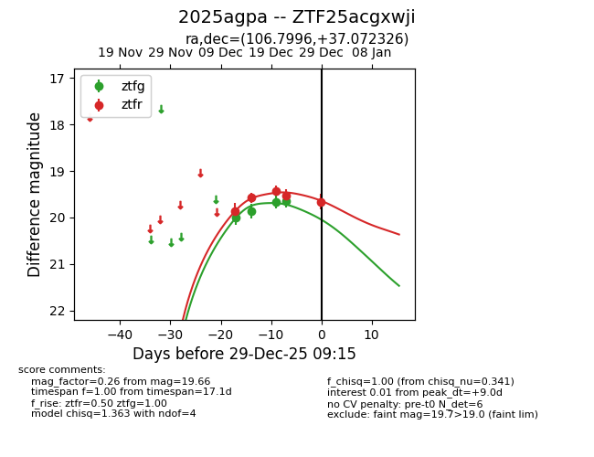
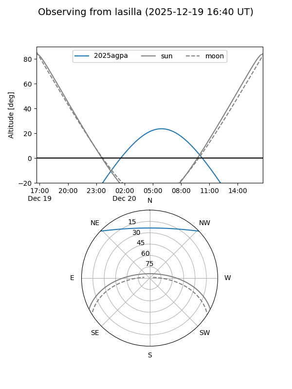
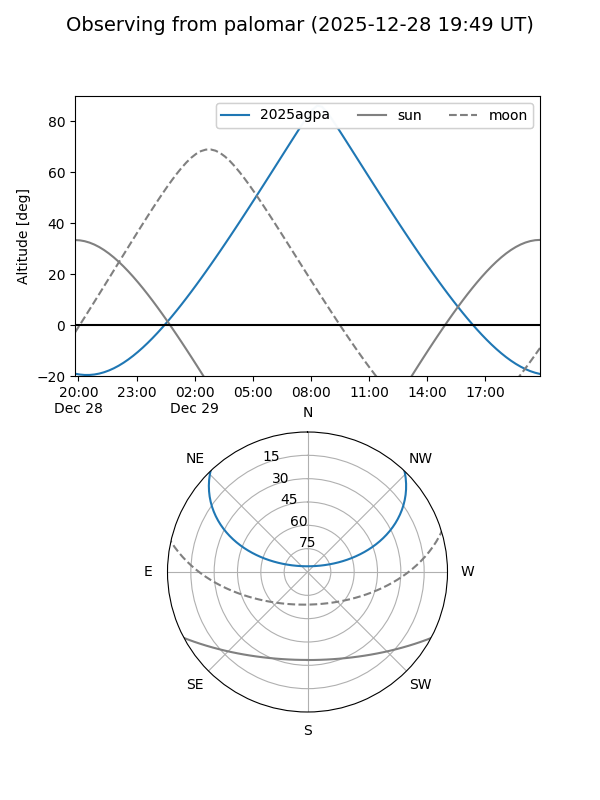

2025agpa
Target 2025agpa at 2025-12-31 16:59
Aliases and brokers:
FINK:
Lasair:
ALeRCE:
TNS:
YSE:
alt names
ZTF25acgxwji (ztf,fink_ztf)
2025agpa (tns,yse)
Coordinates:
equatorial (ra, dec) = 106.7996,+37.07233
equatorial (HMS+DMS) = 07:07:11.89,+37:04:20.37
galactic (l, b) = (180.2070,+18.88505)
Flags:
Photometry:
last ztfg=19.66, ztfr=19.66
4 ztfg, 5 ztfr detections
Lightcurve

Visibility


Additional plots